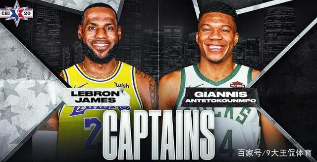
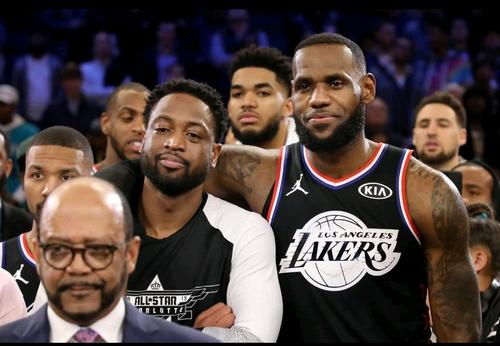
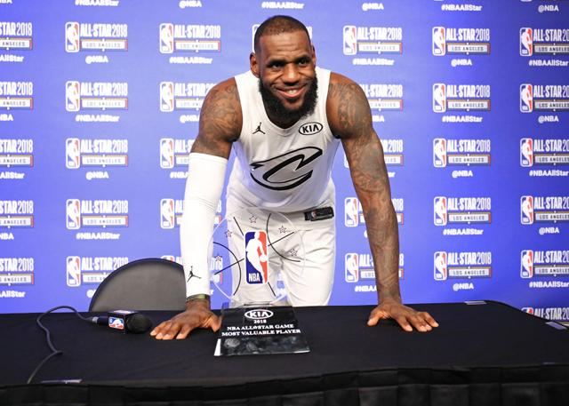

一年一度的NBA盛事再次把球迷朋友们的热情推上了高潮，无论是第一天的新秀赛东契奇、特雷杨的抢眼，还是第二天扣篮大赛戈登、琼斯的龙争虎斗，还有第三天的NBA正赛，无不令球迷朋友们大呼过瘾。值得一提的是本次全明星正赛更是让大家眼前一亮，而且赛后引起巨大反响，可以说是好评如潮，究竟是什么原因让本次全明星如此精彩？听我细细道来。
我认为让本次全明星和之前全明星大不相同的第一个原因就是赛制有所变化。本次全明星采取了以往从未有过的赛制，前三节每一节开始都重新跳球比分从“0”开始，仿佛从头来过的詹姆斯队和字母哥队表现出极强的求生欲。
值得一提的是本次全明星比赛第一节和第二节的胜者都有10万美金的奖金用于公益活动，这也从一定程度上刺激了球员的积极性，最后詹姆斯队赢了第一节获得十万美金资助希望工程，字母哥队赢了第二节获得十万美金给到课外活动。
让球员“拼命”的时候是在比赛的第四节，由于本次全明星致敬科比所以全明星赛第四节不采取计时的方法，取而代之的是“计分制”，就是说两队进入第四节谁的得分较高，在得分高的一队得分基础上加上24分即视作比赛结束的最终得分。由于前三节结束字母哥队得分133分领先詹姆斯队，所以理所应当的在字母哥队得分基础上加上24分，最终算得157分为比赛的终点，两队谁先达到则取胜。
最终詹姆斯队凭借第四节的竭尽全力奋起反扑，凭借哈登的出色防守和底角三分吹响进攻号角，随后伦纳德强硬抢断，安东尼戴维斯罚球绝杀，最后以157-155艰难逆转取胜。157分是在字母哥队前三节总得分133分的基础上加上24分（科比后湖人时期的球衣号码），所以说当比分定个在157分的时候比赛结束了。正是因为比赛第四节的特殊赛制激发起了球员的斗志，在场上詹姆斯队和字母哥队两支球队在队长以身作则的影响下纷纷拿出看家绝技，詹姆斯队这边老詹坦克突破，保罗神准三分，一向“不防守”的哈登竟一人防住了对面一支队伍（怪不得马赛克不要中锋，原来哈登能一打五）。字母哥队这边则是凭借恩比德、字母哥的身高优势频频冲击内线，肯巴沃克外线也是重重开炮，看似不如詹姆斯队的字母哥队表现出惊人战斗力。虽然比赛最后以詹姆斯队取胜而结束，但是两队所有队员都付出了百分之二百的努力，也正是这些全明星球员的拼搏让大家亲眼看到一场季后赛式的全明星赛，视觉得到满足的球迷朋友们当然会让全明星赛零差评了。让我记忆最深刻的一个是哈登一个是保罗。两人作为之前两个赛季的队友在本次全明星赛上都有出色表现。哈登全场虽然只有十几分入账但是他的关键三分和出色的单兵防守能力真的让多人眼前一亮。之前很多球迷朋友们对于哈登的印象不好评价不佳，经常看到的有哈登季后赛疲软、哈登不防守、哈登伪巨星太多太多，但是昨日在近乎总决赛级别的全明星赛上哈登证明了自己。哈登在对上西亚卡姆、恩比德、字母哥三个比自己大一号的球员丝毫不虚甚至可以说西亚卡姆都顶不动哈登，“巨臀”真的不是白叫的，哈登的防守能力绝对被低估而且尤其事低位的防守，之前有数据表明哈登是低位防守最成功的球员。
相对于哈登防守端的表现，保罗出色的地方则在于进攻端。全场保罗拿到23分2篮板6助攻，其中三分11中7，用实力证明自己依旧是当今联盟控卫线上顶级存在。保罗昨日比赛打的真的是游刃有余，作为一名34岁的老将生涯10次入选全明星打的确实比很多球员要好，很多球迷朋友们疑问为什么在第四节决胜时刻要用保罗而不用首发的东契奇？因为保罗比东契奇强在经验强在稳，不知什么时候我看保罗在场上打球心眼里就是觉得太稳了。
赛后保罗谈及本次全明星的精彩，他说:“是我的建议，想让全明星更精彩”，的确是保罗的求生欲一般人真的比不上，本次全明星詹姆斯队主教练沃格尔说保罗是取胜的关键，他告诉大家他不想输。哈登也是表示本次全明星足以在联盟历史上留下浓墨重彩的一笔。哈登最后一球传给保罗的那个瞬间赛后引起球迷朋友们的热议，有人觉得他不想背锅，有人觉得他想给保罗一个MVP，的确这可能是保罗职业生涯最后一次全明星赛的表演，如果他能投中最后的绝杀，那么MVP可能就是保罗的了。
最终NBA2020年全明星正赛以詹姆斯队157-字母哥队155而结束，伦纳德获得生涯第一次全明星赛MVP奖杯，全体参赛成员喜笑颜开，一场富有意义且精彩绝伦的全明星比赛正式结束。本次全明星比赛确实是值得载入史册的一年，几乎所有球星都在赛后发表了自己的看法，致敬科比的同时也让“曼巴精神”得到传承。
本次全明星对于很多球员尤其是东契奇、特雷杨、西亚卡姆、英格拉姆这样第一次入选全明星的球员来说意义重大，他们可能在比赛过程中没能得到太多的表现机会，但是他们在比赛中学到的东西真的很难得。

2019nba全明星正赛结果出炉：詹姆斯队20分大翻盘！
詹姆斯一队命中率连50%都不到，三分球41投仅13中，甚至不如常规赛。杜兰特得了13分，詹姆斯10分。
赛前接受采访时，詹姆斯就说，他希望比赛能打出高分，但也同样希望比赛能有竞争力。去年的得分是148-145，他希望能超过这个得分。
利拉德超远三分 上半场的得分极高，符合詹姆斯的期望，但他们一队一直处于劣势，竞争力不足。第三节开始后，他们三分球命中率仍不高，但进攻更加积极。詹韦连续也总算出现，本节开场后不久，两人快速发动攻击，韦德将球打到篮板上，詹姆斯接反弹球，空中接力暴扣。
第三节打了一半后，詹姆斯队的在分终于准起来，哈登和汤普森接连命中，利拉德也找到手感，本节还有2分56秒时，他命中超远三分，将比分扳成了124-124。洛瑞还以一记三分后，利拉德又超远命中，双方终于进入詹姆斯所希望见到了局面。
汤神三分 双方又开始防守，场上的局面比较激烈。三节过后，詹姆斯队以132-131超出。
第四节两队竟然开始了交替领先。本节开始后不久，库里迎着汤普森命中三分，不但投中还造成犯规，“水花兄弟”这次各为其主，库里连投带罚拿下4分，他们以145-139领先。
威少转身上篮 莱昂纳德也开始拼三分，詹姆斯队又将比分追上。本节打了不到一半，双方总分就已经突破了308分，创下了历史纪录。
库里颜射汤普森3+1 剩下近6分钟时，双方都派上主力，进入决战阶段。着急时刻，安特托孔波队命中率下降，库里连连三分不中，而詹姆斯和杜兰特发威，接连命中三分，在比赛还有3分14秒时，詹姆斯与欧文连线，空中接力扣篮后，他们以168-158取得了两位数的优势。
KD三分 杜兰特朝MVP发动冲击，此后又投篮合，而哈登命中超远三分，他们以178-162拉开差距，锁定了胜局。
库里最后时刻也完成了一次扣篮，他是今天制造精彩镜头最多的。
詹姆斯队成功完成逆转，抢走了最后的胜利，詹姆斯赛前的期待也都如愿。一方在2分30秒内没得分，库里此后三分仍不中，好不容易才由恩比德补中一球。杜兰特马上又命中三分，詹姆斯队以171-160扩大优势，时间只剩下了2分钟。

当全明星来到洛杉矶这座城市之后，总是会为这项赛事增添某种狂欢的气氛。而谈论到2018年的NBA全明星，好莱坞仍然没有辜负人们对它的期待。从上周就开始陆续有许多明星大腕以及NBA传奇球星来到这座城市，当然还有全明星球员出现在球场至少，无时无刻不在提醒着人们全明星周末的到来。
当然这不是全明星的全部，但是如果你恰好错过这些的话，这8个时刻和事件能够帮助你回顾这届精彩的全明星赛：
全明星赛的回归
传统的东西部对抗形式终于在第67届全明星赛中迎来了改革，由勒布朗-詹姆斯和斯蒂芬-库里分别选择各自球员的方式已经被证明是一次巨大的成功。而比赛本身，尤其是最后疯狂的几分钟，也足以让人手心出汗。勒布朗队在最后6分钟完成了28-12的逆转，让这场比赛成为了一场真正的较量。两支球队为我们送上了一场精彩的比赛，同时还有每个人都希望的全明星选人直播（也许在不久之后就将到来）。
初窥“过程”？
首次入选全明星的布拉德利-比尔（华盛顿奇才），维克托-奥拉迪波（印第安纳步行者），卡尔-安东尼-唐斯（明尼苏达森林狼）以及乔尔-恩比德（费城76人）在周日晚的全明星正赛中都有非常不错的发挥。其中大帝的表现尤为出色，如果库里队能够在最后时刻守住领先优势的话，恩比德甚至有机会加冕全明星MVP的荣誉。在比赛中他与拉塞尔-威斯布鲁克以及勒布朗的身体对抗让人拍手称赞，这也是人们所期待看到的“过程”。
传奇们再次重聚
在全明星周末里，永远不会过时的事情就是看到NBA活着的传奇球员们在各个地方结伴出现。而这次洛杉矶全明星更是如此，从传奇球星的聚餐到全明星周六之夜再到全明星周日的正赛。没有一项运动要比NBA拥有更加丰富的历史。
浓眉身披考神的球衣
在全明星正赛中，新奥尔良鹈鹕的球星安东尼-戴维斯在开场阶段没有身穿自己的球衣出场，而是选择身披队友德马库斯-考辛斯的0号球衣出场。彰显了二人之间真挚的兄弟之情。赛前考神也对浓眉玩笑道：“如果你要是砍下50分并且获得MVP，那可都是我的。”
未来新星崭露头角
周五晚的新秀对抗赛也着实精彩，波士顿凯尔特人的杰伦-布朗的35分冠绝全场，博格丹诺维奇的26分帮助国际队轻松取胜，自己也成功当选新秀赛MVP，同时还有一些联盟中最让人激动未来新秀。他们中的部分球员有可能会出现在明年的夏洛特全明星和2020年的芝加哥全明星赛上。
投手们的天堂
那些在过去这么多年统治联盟的伟大射手们，都没有做到过菲尼克斯太阳后卫德文-布克在周六三分大赛中做到的事情。布克在决赛轮投出创赛事纪录的28分，同时还击败了2016年的三分大赛冠军克莱-汤普森，成功捧起奖杯。在最后一轮比赛中，他25次出手命中了惊人的20球。
场上场下都是MVP的勒布朗
全明星周末上年龄最大的球员在场上和场下都有最好的表现。勒布朗-詹姆斯用自己近乎完美的准三双表现（29分10篮板8助攻）捧起全明星赛MVP奖杯。同时他与杜兰特对电视台记者“闭上嘴打球”的还击也引发了广泛的社会讨论，在周六的媒体日上，他细致入微和有说服力的话语就是最好的回应。
一位球星在此诞生
如果你在扣篮大赛之前还不知道多诺万-米切尔的名字的话，那么现在你一定知道了。这位犹他爵士的新秀用惊艳的表现让自己的名字为全世界所熟知。米切尔凭借着飞跃三人（自己的妹妹、喜剧演员凯文-哈特和他的儿子）的扣篮、身披历史球星（达里尔-格里菲斯和文斯-卡特）的球衣，击败了劲敌——来自克利夫兰骑士队的小拉里-南斯捧得冠军奖杯。